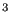
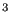

Purpose of this exercise is to calculate the stresses in a reinforced concrete cantilever beam due to its own weight. Special issues in this type of problem are the treatment of the structure as a composite and the presence of a compression-only material (the concrete).
The input deck runs like:
*NODE, NSET=Nall
1,1.000000000000e+01,0.000000000000e+00,0.000000000000e+00
...
*ELEMENT, TYPE=S8R, ELSET=Eall
1, 1, 2, 3, 4, 5, 6, 7, 8
2, 2, 9, 10, 3, 11, 12, 13, 6
...
** Names based on left
*NSET,NSET=Nleft
49,
50,
52,
** Names based on right
*NSET,NSET=Nright
1,
4,
8,
*MATERIAL,NAME=COMPRESSION_ONLY
*USER MATERIAL,CONSTANTS=2
1.4e10, 1.e5
*DENSITY
2350.
*MATERIAL,NAME=STEEL
*ELASTIC
210000.e6,.3
*DENSITY
7800.
*SHELL SECTION,ELSET=Eall,COMPOSITE
.09,,COMPRESSION_ONLY
.01,,STEEL
.1,,COMPRESSION_ONLY
.1,,COMPRESSION_ONLY
.1,,COMPRESSION_ONLY
.1,,COMPRESSION_ONLY
.1,,COMPRESSION_ONLY
.1,,COMPRESSION_ONLY
.1,,COMPRESSION_ONLY
.1,,COMPRESSION_ONLY
.1,,COMPRESSION_ONLY
*BOUNDARY
Nleft,1,6
*STEP,NLGEOM
*STATIC
1.,1.
*DLOAD
Eall,GRAV,9.81,0.,0.,-1.
*NODE FILE
U
*EL FILE
S
*END STEP
The beam has a cross section of 1 x 1
m and a length of 10 m. The
density of concrete is 2350
kg
and a length of 10 m. The
density of concrete is 2350
kg m, whereas the density of
steel is 7800
kg
m, whereas the density of
steel is 7800
kg m. The
Young's moduli are 14000 MPa and 210000 MPa, respectively. Steel is
provided only on the top of the beam (tension side of the beam) at a distance
of 9.5 cm from the upper surface. Its layer thickness is 1 cm (in reality the
steel is placed within the concrete in the form of bars. The modeling as a
thin layer is an approximation. One has to make sure that the complete section
of the bars equals the section of the layer).
Using the composite feature
available for shell structures significantly simplifies the input. Notice that
this feature is not (yet) available for beam elements. Consequently the beam
was modeled as a plate with a width of 1 m and a length of 10
m. Underneath the *SHELL SECTION card the thickness of the layers and their
material is listed, starting at the top of the beam. The direction (from top
to bottom) is controlled by the direction of the normal on the shell elements
(which is controlled by the order in which the elements' nodes are listed
underneath the *ELEMENT card). In a composite shell there are two integration
points across each layer. Use of the S8R element or S6 element is mandatory. In order to
capture the location of the neutral axis several layers were used to model the
concrete part of the section (in total 10 layers for the concrete and 1 for
the steel).
m. The
Young's moduli are 14000 MPa and 210000 MPa, respectively. Steel is
provided only on the top of the beam (tension side of the beam) at a distance
of 9.5 cm from the upper surface. Its layer thickness is 1 cm (in reality the
steel is placed within the concrete in the form of bars. The modeling as a
thin layer is an approximation. One has to make sure that the complete section
of the bars equals the section of the layer).
Using the composite feature
available for shell structures significantly simplifies the input. Notice that
this feature is not (yet) available for beam elements. Consequently the beam
was modeled as a plate with a width of 1 m and a length of 10
m. Underneath the *SHELL SECTION card the thickness of the layers and their
material is listed, starting at the top of the beam. The direction (from top
to bottom) is controlled by the direction of the normal on the shell elements
(which is controlled by the order in which the elements' nodes are listed
underneath the *ELEMENT card). In a composite shell there are two integration
points across each layer. Use of the S8R element or S6 element is mandatory. In order to
capture the location of the neutral axis several layers were used to model the
concrete part of the section (in total 10 layers for the concrete and 1 for
the steel).
Concrete cannot sustain tension whereas it is largely linear elastic under pressure. This can be modeled with the COMPRESSION_ONLY material model. In CalculiX this is an example of a user material. The name of user materials has to start with a fixed character set, in this case ''COMPRESSION_ONLY''. The remaining 64 characters (a material name can be at most 80 characters long) can be freely chosen. In the present input deck no extra characters were selected. Choosing extra characters is needed if more than 1 compression-only material is present (in order to distinguish them). The ''COMPRESSION_ONLY'' material is characterized by 2 constants, the first is Young's modulus, the second is the maximum tensile stress the user is willing to allow, in our case 0.1 MPa (SI-units are used).
Using simple beam theory ([58]) leads to a tensile stress of 152.3 MPa in the steel and a maximum compressive stress of 7.77 MPa at the lower edge of the concrete. The finite element calculation (Figure 43) predicts 152 MPa and 7.38 MPa, respectively, which is quite close. In CalculiX, the graphical output of composite structures is always expanded into three dimensions. In Figure 44 one notices the correct dimension of the composite and the high tensile stresses in the thin steel layer.